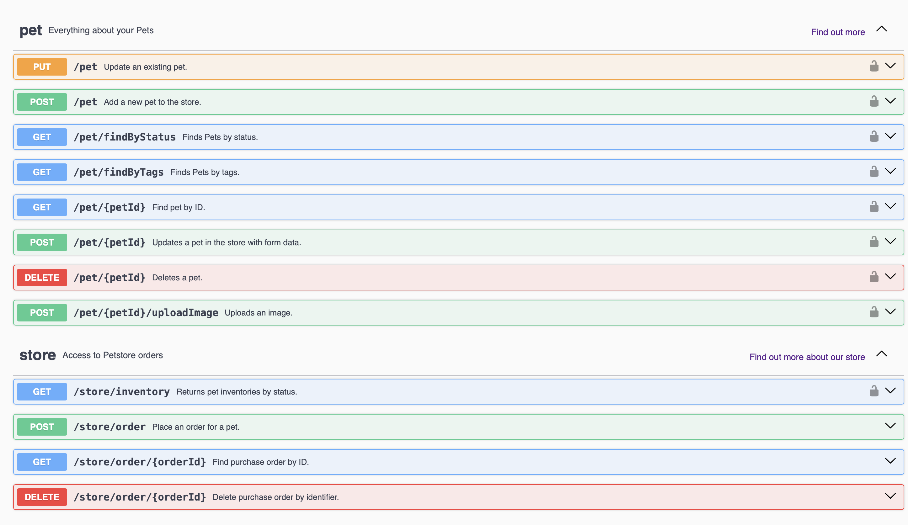
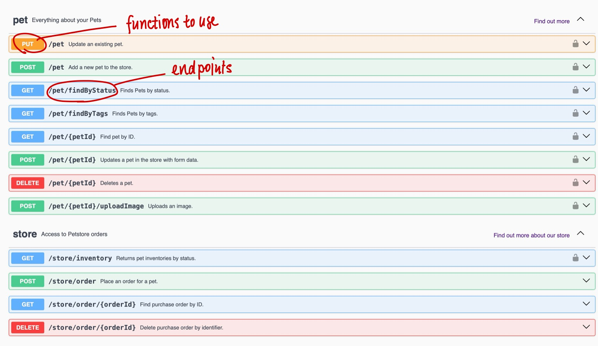

Let’s pretend you want to keep track of what kind of pets are at your local pet store. Luckily, that local Pet store has their own server, and you can use an API to get important info you need.
general overview
this is what a REST API (visualisation) can look like: 
highlight certain things
 what do we want to see here? - exchange data using HTTP (internet protocol) - set of functions like GET, PUT, DELETE, etc. that clients can use to access server data. - endpoints
# highlight the following here: http method, path resp <- req |>req_headers("X-Api-Key"= api_key) |>req_perform()resp
<httr2_response>
GET https://api.api-ninjas.com/v1/population?country=Japan
Status: 200 OK
Content-Type: application/json
Body: In memory (6834 bytes)
Plumber - write your own API
# plumber.R - can run API (with OpenAPI in RStudio)library(plumber)
Warning: package 'plumber' was built under R version 4.4.1
#* Set Number of Observations #* @param n number of observations#* @post /observations#* Plot a histogram#* @serializer png#* @get /plotfunction(n =100) { rand <-rnorm(n)hist(rand)}